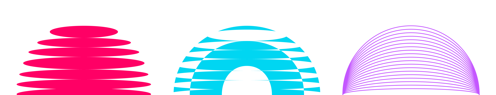
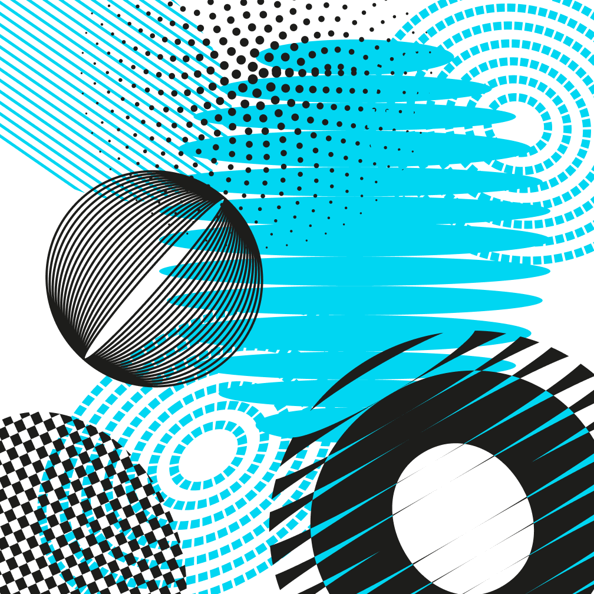
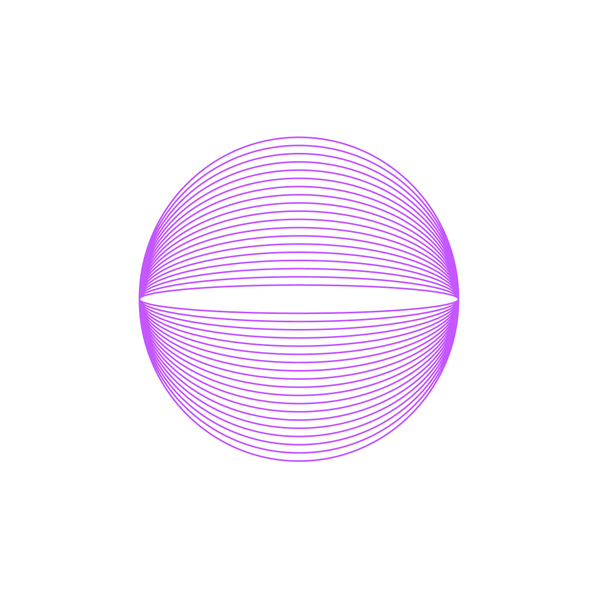
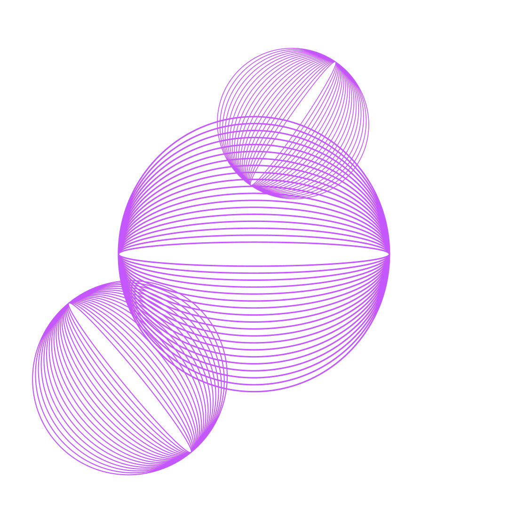
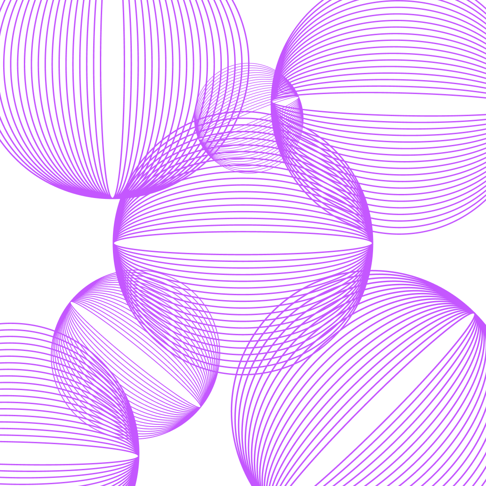
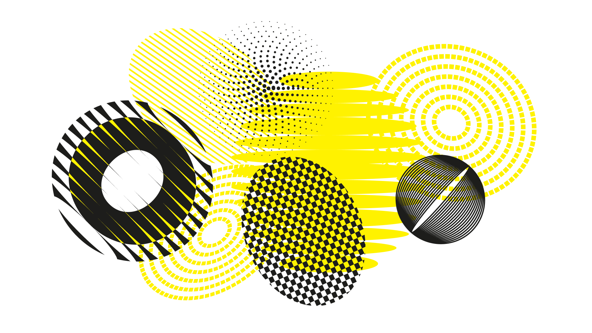

A corporate pro bono program with many social directions and no system to hold them together — rebuilt around one idea: the letter O.
See more↓Open Tech is a corporate pro bono program initiated and created by SoftServe employees. It brings together specialists ready to give their time and skills to solve pressing social problems.
Its directions include education, healthcare, environment, smart-city innovation, community empowerment, equality and inclusion, and help for vulnerable people.

Open Tech was doing serious work across many very different causes. But visually it had drifted: an outdated look, and no shared logic tying the directions together.
Each area risked looking like a separate thing rather than one program.
A lot of directions, and nothing that made them read as one brand.
How do you unify many different social directions into one system that stays simple, recognizable, and easy to understand — no matter how many causes it holds?
The brief wasn't to make it louder or add more. With this many directions, more visual variety would only deepen the chaos.
The opposite: find one idea strong enough that every direction could live inside it and still read as Open Tech.
I led the rebranding concept and the visual system.
I developed the concept and presented it to the Open Tech team, who approved it as the direction for the rebrand.
The website itself was built and launched by two designers from the Open Tech team. We worked on it together, reviewing options and choosing which ones to take forward.
The whole identity grows from a single letter: the O in Open Tech. The O is where everyone ready to change something gathers — the table people pull up to when they come together around one problem.
It starts with a single O — yours — and every other joins it, until together they form the pattern. One letter carries both the name and the meaning of the program.



It starts with you, and the rest join in.
The O never changes its meaning, only its form. For each direction I defined its own colour and element — a distinct pattern or texture built from the O — that can then be combined into a shared pattern.
Every direction is instantly its own — its colour, its O-form. Colour is the code: people navigate the causes by colour before they read a word.
The same forms combine into one recognizable Open Tech pattern.

Many causes, one shape. The limitation is the point: no matter how many directions are added, they all speak the same visual language.
The system wasn't just a key visual — it was built to run everywhere. Applied across the program, it holds together the landing page, event templates and social media.
The website was built by the Open Tech team on top of the system.
The same language, from a one-off post to the whole site.
The proof isn't a vanity metric: it's that a program this broad found one shape simple enough to carry every cause — and still uses it.
After I presented the concept, the Open Tech team aligned on the direction, I handed over the mini guideline, and the system went into production. It became the identity the program shipped and has run on since.
Concept approved & shipped
Still in use across the program
Open Tech didn't need more visual variety — it needed one idea strong enough to hold everything. The answer was the simplest thing it already had: its own first letter.
It starts with one O. Everything else joins in.